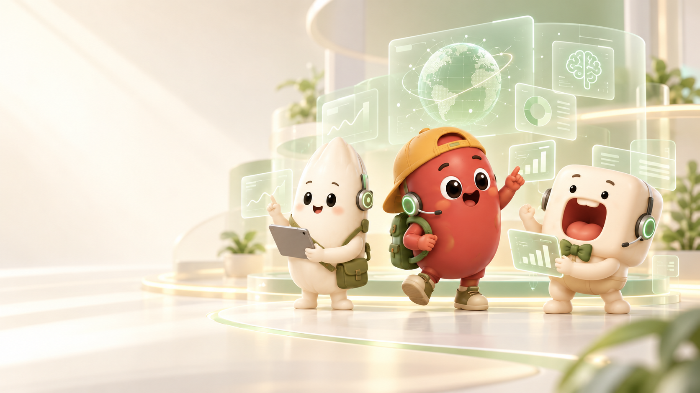

FRIEND 01
小豆 「先做了再說！」
只要踏出第一步，路就會自己長出來。小豆總是最快出發，也最常忘了帶地圖。
熱血不怕糟糕愛揪團
總是第一個衝出去，把還在猶豫的大家一起拉上路。
很怕讓期待自己的人失望，所以常把疲累藏在行動後面。
出發前先停一下，也讓別人有機會陪我一起勇敢。
「大不了走錯，走錯也可能有好風景啊。」
豆米口小宇宙・正在營業
三個不太完美的小家伙，用好奇、勇氣和一點點傻勁，把每天的難題變成值得收藏的故事。
不用登入、不會突然賣你東西，先在這裡坐一下。
今天的你，不用很厲害也值得被喜歡。
帶著這句話，去找今天的夥伴 ↓
把世界想得柔軟一點
三個個性，一種默契
點點他們，聽聽每個人心裡那句小小的話。
FRIEND 01
只要踏出第一步，路就會自己長出來。小豆總是最快出發，也最常忘了帶地圖。
總是第一個衝出去，把還在猶豫的大家一起拉上路。
很怕讓期待自己的人失望，所以常把疲累藏在行動後面。
出發前先停一下，也讓別人有機會陪我一起勇敢。
「大不了走錯，走錯也可能有好風景啊。」
看看三個小家伙，哪一句話最像今天的你？
↑一個小小的轉彎
第一季 · 小小事情研究所
在平凡裡練習理解、分享與被接住。三篇短短的日常，沒有標準答案，只有願意多懂彼此一點。
故事讀完以後
不用登入、不用回報，也沒有人替你打分數。抽一張剛剛好的練習，只留在你的裝置裡。
今天留意一件平常會被忽略的小事，安靜地看它十秒鐘。
小米說：看見，本身就是一種溫柔。
這張卡不會自動公開，怎麼完成都算數。
從故事裡，帶一點點回家
這裡的東西不是為了裝滿購物車，是想在你的日常裡，留一個「我懂」。
把今天的勇氣背出門
今天不想解釋，就戴在身上
每一口，都是不必趕路的證明
把沒說完的話，寄給一個人
留白也算今天的一部分
把還沒整理好的都先收進來
手上有一杯，路就不孤單
不必準備好才出發
把世界的音量調低一點
每一步都有人好好接住
目前是商品概念展，先收藏喜歡的，不用現在做決定。
一個名字，兩種把想法做出來的方法
我們相信，好創意會先讓人感到被理解，再慢慢長成可以陪伴生活的東西。DOMICO 從三個小家伙出發，把故事、設計與技術放在同一張桌上。
從小豆、小米、小口開始認識我們 ↑角色故事、漫畫、生活物件與品牌合作。把一個有共鳴的念頭，做成想被留在身邊的作品。
現在正在發生：小豆・小米・小口數位產品、互動體驗與技術實驗。讓科技不只好用，也能保留人的感受與一點想像力。
正在醞釀，之後慢慢告訴你如果今天不太順利……